DD014.1: Visual Rendering Specification for Multi-Scale Visualization¶
- Status: Proposed
- Author: OpenWorm Core Team
- Date: 2026-02-16
- Companion to: DD014 (Dynamic Visualization and Multi-Scale Exploration Architecture)
- Related: DD001 (Neural Circuit), DD002 (Muscle Model), DD003 (Body Physics), DD004 (Cell Identity), DD005 (Cell-Type Specialization), DD006 (Neuropeptidergic Connectome), DD007 (Pharyngeal System), DD008 (Data Integration), DD009 (Intestinal Oscillator), DD010 (Validation Framework)
Phase: Phase 1 | Layer: Visualization
TL;DR¶
This document defines what the OpenWorm simulation looks like — exact colors, materials, lighting, transparency, transitions, and rendering algorithms for every visual element at every scale. DD014 specifies the architecture (data pipeline, Zarr schema, Trame/Three.js framework, Docker integration); DD014.1 specifies the visual design. A developer should be able to implement any visual element by reading DD014.1 (appearance) and DD014 (data format) without guessing.
Goal & Success Criteria¶
- Implementation-complete visual spec. A developer working in Three.js, PyVista, or any WebGPU renderer can implement any visual element described here without asking "what color?" or "how bright?" or "how transparent?"
- Canonical color palette. Every one of the 959 cells in the C. elegans organism has a defined color assignment, either directly (for the 37 Virtual Worm material categories) or by inheritance (cell → tissue type → material category).
- Reference mockups as acceptance test. 14 canonical views define "correct" rendering. Visual review of implementation screenshots against these mockup specifications is the acceptance test.
- Multi-scale continuity. Transitions between organism, tissue, and molecular scales are specified with enough detail to implement smooth, non-jarring zoom animations.
Deliverables¶
- Canonical color palette definition (hex values for all 37 Virtual Worm material categories, activity-state dynamic colors, and molecular-scale palette)
- 14 reference mockup specifications as acceptance criteria (Sections 6, Mockups 1-14)
- Rendering technique specifications (ambient occlusion, subsurface scattering parameters, OIT, bloom)
- Cell-to-material mapping rules for all 959 cells (Section 7)
- Theme/style configuration file (JSON/YAML) for the DD014 viewer
[TO BE CREATED]
Repository & Issues¶
- Primary repository:
openworm/viewer[TO BE CREATED](rendering configuration and theme files) - Issue label:
dd014.1,rendering - Related: DD014 parent DD (viewer architecture)
How to Build & Test¶
- Prerequisites: DD014 viewer running locally (see DD014)
- Test procedure: Load reference scene, compare implementation screenshots against the 14 mockup specifications (Section 6)
- Automated: Color palette validation script checks hex values match specification
[TO BE CREATED] - Green light: All 14 reference mockups match within perceptual similarity threshold; all 37 material categories render correctly
1. Canonical Color Palette¶
All colors originate from the Virtual Worm February 2012 Blender model (Virtual_Worm_February_2012.blend), which defines 37 material categories covering the complete anatomy of C. elegans. These are the heritage colors — the closest thing the project has to a canonical palette, and they are preserved here.
1A. Heritage Palette — Virtual Worm 37 Materials¶
Extracted directly from Virtual_Worm_February_2012.mtl. RGB values are the Kd (diffuse) component. All materials share: specular exponent Ns=96, ambient Ka=(0,0,0), illumination model 2 (Blinn-Phong).
Muscle Tissues (7 materials)¶
| Material | MTL Name | RGB (0-1) | RGB (0-255) | Hex | Visual Description |
|---|---|---|---|---|---|
| Body Wall Muscle | Body_Wall_Muscle |
0.16, 0.32, 0.00 | 41, 82, 0 | #295200 |
Dark green |
| Vulval Muscle | Vulval_Muscle |
0.48, 0.64, 0.32 | 122, 163, 82 | #7AA352 |
Yellow-green |
| Uterine Muscle | Uterine_Muscle |
0.48, 0.64, 0.00 | 122, 163, 0 | #7AA300 |
Bright yellow-green |
| Stomatointestinal Muscle | Stomatoint_Muscle |
0.00, 0.32, 0.00 | 0, 82, 0 | #005200 |
Forest green |
| Sphincter & Anal Depressor Muscle | Sphnc_&_Anal_Dep_Musc |
0.32, 0.48, 0.00 | 82, 122, 0 | #527A00 |
Olive green |
| Even Pharyngeal Muscle | Even#PhMusc |
0.64, 0.80, 0.48 | 163, 204, 122 | #A3CC7A |
Light green |
| Odd Pharyngeal Muscle | Odd#PhMuscle |
0.16, 0.64, 0.00 | 41, 163, 0 | #29A300 |
Bright green |
Design rationale: All muscles share the green family. Body wall muscles are the darkest green (most prominent, needs contrast with other tissues). Pharyngeal muscles are lighter green to distinguish from BWM. This green baseline is important because the activity-state overlay (Section 1B) shifts muscles toward red when contracted — the green→red dynamic range is the primary visual indicator of muscle state.
Neuron Types (5 materials)¶
| Material | MTL Name | RGB (0-1) | RGB (0-255) | Hex | Visual Description |
|---|---|---|---|---|---|
| Interneuron | Interneuron |
0.80, 0.16, 0.00 | 204, 41, 0 | #CC2900 |
Orange-red |
| Motor Neuron | Motor_Neuron |
0.48, 0.32, 0.75 | 122, 82, 190 | #7A52BE |
Purple-blue |
| Sensory Neuron | SensoryNeuron |
0.80, 0.32, 0.75 | 204, 82, 190 | #CC52BE |
Magenta-pink |
| Polymodal Neuron | PolymodalNeuron |
0.77, 0.01, 0.01 | 196, 2, 2 | #C40202 |
Deep red |
| Neuron (Unknown Function) | NeurUnkFunc |
0.48, 0.00, 0.16 | 122, 0, 41 | #7A0029 |
Burgundy |
Design rationale: Neuron types use warm/saturated colors that stand out against the green muscle background. Each functional class has a distinct hue to support visual identification. The activity-state overlay (Section 1B) modulates brightness, not hue — the base color always communicates neuron class.
Structural & Epithelial Tissues (14 materials)¶
| Material | MTL Name | RGB (0-1) | RGB (0-255) | Hex | Visual Description |
|---|---|---|---|---|---|
| Hypodermis | Hypodermis |
0.69, 0.61, 0.54 | 176, 156, 138 | #B09C8A |
Tan/beige |
| Seam Cell | Seam_Cell |
0.64, 0.32, 0.16 | 163, 82, 41 | #A35229 |
Brown |
| Intestine | Intestine |
0.80, 0.64, 0.80 | 204, 163, 204 | #CCA3CC |
Light lavender |
| Pharyngeal Epithelium | Pharyngeal_Epithelium |
0.48, 0.32, 0.32 | 122, 82, 82 | #7A5252 |
Muted rose |
| Rectal Epithelium | Rectal_epithelium |
0.48, 0.32, 0.32 | 122, 82, 82 | #7A5252 |
Muted rose |
| Vulva Epithelium | Vulva_epithelium |
0.48, 0.48, 0.80 | 122, 122, 204 | #7A7ACC |
Periwinkle |
| Arcade Cells | Arcade_Cells |
0.64, 0.64, 0.00 | 163, 163, 0 | #A3A300 |
Dark yellow |
| Socket Cell | SocketCell |
0.80, 0.48, 0.48 | 204, 122, 122 | #CC7A7A |
Salmon |
| GLR Cells | GLR_Cells |
0.75, 0.48, 0.00 | 190, 122, 0 | #BE7A00 |
Amber |
| Marginal Cells | marginal_cells |
0.75, 0.16, 0.75 | 190, 41, 190 | #BE29BE |
Magenta |
| Head Mesodermal Cell | Head_Mesodermal_Cell |
0.80, 0.32, 0.16 | 204, 82, 41 | #CC5229 |
Burnt orange |
| Coelomocyte | Coelomocyte |
0.80, 0.64, 0.00 | 204, 163, 0 | #CCA300 |
Gold |
| Pharyngeal & Rectal Glands | Phary_&_Rect_Glands |
0.64, 0.64, 0.80 | 163, 163, 204 | #A3A3CC |
Lavender-gray |
| VPI & VIR | VPI_&_VIR |
0.48, 0.32, 0.16 | 122, 82, 41 | #7A5229 |
Brown |
Excretory System (4 materials)¶
| Material | MTL Name | RGB (0-1) | RGB (0-255) | Hex | Visual Description |
|---|---|---|---|---|---|
| Excretory Cell | Excretory_Cell |
0.64, 0.16, 0.32 | 163, 41, 82 | #A32952 |
Rose |
| Excretory Pore Cell | Excretory_Pore_Cell |
0.74, 0.77, 0.45 | 189, 198, 114 | #BDC672 |
Khaki |
| Excretory Duct Cell | Excretory_Duct_Cell |
0.64, 0.48, 0.32 | 163, 122, 82 | #A37A52 |
Tan |
| Excretory Gland Cells | Excretory_Gland_Cells |
0.48, 0.48, 0.64 | 122, 122, 163 | #7A7AA3 |
Steel blue |
Reproductive System (5 materials)¶
| Material | MTL Name | RGB (0-1) | RGB (0-255) | Hex | Visual Description |
|---|---|---|---|---|---|
| Germline | Germline |
0.00, 0.16, 0.32 | 0, 41, 82 | #002952 |
Dark navy |
| DTC & Somatic Gonad | DTC_&_Somatic_Gonad |
0.48, 0.32, 0.80 | 122, 82, 204 | #7A52CC |
Purple |
| Spermatheca | Spermatheca |
0.16, 0.48, 0.80 | 41, 122, 204 | #297ACC |
Blue |
| Spermathecal-Uterine Valve | Spermath_Uterin_Valve |
0.32, 0.32, 0.48 | 82, 82, 122 | #52527A |
Slate |
| Uterus | Uterus |
0.48, 0.64, 0.64 | 122, 163, 163 | #7AA3A3 |
Teal |
Other (2 materials)¶
| Material | MTL Name | RGB (0-1) | RGB (0-255) | Hex | Visual Description |
|---|---|---|---|---|---|
| Sheath (Other) | SheathOther |
0.16, 0.48, 0.48 | 41, 122, 122 | #297A7A |
Dark teal |
| Temp DRG Color | Temp_DRG_Color |
0.77, 0.16, 0.00 | 198, 42, 0 | #C62A00 |
Orange-red |
Global Material Properties (from MTL)¶
All 37 Virtual Worm materials share these base properties:
| Property | MTL Key | Value | Meaning |
|---|---|---|---|
| Specular exponent | Ns |
96.078431 | Moderately sharp specular highlights |
| Ambient | Ka |
(0, 0, 0) | No ambient contribution (lighting-dependent) |
| Specular | Ks |
(0, 0, 0)* | No specular highlights for most tissues |
| Opacity | d |
0.05 | 5% opaque (highly translucent) |
| Illumination model | illum |
2 | Blinn-Phong shading |
*Exception: Coelomocyte has Ks=(0.5, 0.5, 0.5) — a slight wet/glossy look, biologically motivated by their scavenger function.
Note on opacity: The MTL file specifies d=0.05 (5% opaque) for all materials. This works in the original Blender model where all 37 tissue layers are composited together — each layer contributes a faint wash of color, and stacking them produces the complete worm. In the interactive viewer, opacity must be adjusted per-context (see Section 3 for scale-specific opacity values).
1B. Activity-State Dynamic Colors¶
These are overlays on the base heritage colors. They communicate time-varying simulation state. When a cell is at rest, it shows its base color from Section 1A. When active, the dynamic mapping modifies brightness, hue, or opacity.
| Data Source | Visual Property Modified | Rest State | Active State | Colormap | Scale Range | DD Source |
|---|---|---|---|---|---|---|
| Neuron membrane voltage | Brightness + hue shift | Base color at 30% brightness | Base color at 100% brightness + white core glow | Blue tint (rest) → base color (threshold) → white core (peak) | -80 mV (rest) to +20 mV (peak depolarization) | DD001 |
| Neuron intracellular [Ca²⁺] | Additive glow color | No glow (black additive) | Gold/yellow glow (#FFD700) |
Black (0) → Gold (max) additive blend | 0 to max_ca (per-neuron normalized) |
DD001 |
| Muscle activation | Hue shift (green→red) | Base green color (#295200) |
Red (#CC2200) |
RdYlGn_r (reversed Red-Yellow-Green) |
0.0 (relaxed) to 1.0 (max contraction) | DD002 |
| Intestinal [Ca²⁺] per cell | Cell face color gradient | Cool blue (#2244CC) |
Hot red (#CC2200) |
Blue→Red (sequential) | 0 to max_intestinal_ca |
DD009 |
| Pharynx pumping state | Opacity modulation | 40% opacity (relaxed) | 95% opacity (contracted) | Transparent→Opaque | 0.0 (relaxed) to 1.0 (contracted) | DD007 |
| Neuropeptide concentration | Volumetric cloud density + color | Fully transparent | Colored semi-transparent cloud | Per-peptide color, alpha ∝ concentration | 0 to max_conc |
DD006 |
| SPH particle type | Point color (categorical) | N/A | N/A | Blue=liquid, Green=elastic, Gray=boundary | Categorical | DD003 |
| Cell identity (DD004) | Cell outline color | Per-tissue-type color from 1A | N/A | Categorical (same as heritage palette) | Categorical | DD004 |
Voltage-to-Visual Mapping (Detail)¶
The neuron voltage mapping is the most visually complex dynamic overlay. Here is the precise algorithm:
input: V (membrane voltage in mV), base_color (RGB from Section 1A)
output: rendered_color (RGB), glow_intensity (float 0-1)
V_rest = -80.0 # mV
V_thresh = -40.0 # mV (approximate action potential threshold)
V_peak = +20.0 # mV
# Normalize voltage to 0-1 range
t = clamp((V - V_rest) / (V_peak - V_rest), 0.0, 1.0)
# Brightness: ramp from 0.3 (rest) to 1.0 (peak)
brightness = 0.3 + 0.7 * t
# At rest (t < 0.25): tint toward blue
# At threshold (t ≈ 0.5): show base color at full brightness
# At peak (t > 0.85): blend toward white
if t < 0.25:
blue_tint = RGB(0.2, 0.3, 0.6)
rendered_color = lerp(blue_tint, base_color, t / 0.25) * brightness
elif t < 0.85:
rendered_color = base_color * brightness
else:
white = RGB(1.0, 1.0, 1.0)
rendered_color = lerp(base_color, white, (t - 0.85) / 0.15) * brightness
# Glow: only emits above threshold
glow_intensity = max(0.0, (t - 0.5) / 0.5) # 0 below threshold, ramps to 1.0
Muscle Activation Mapping (Detail)¶
input: activation (float 0-1), base_green = RGB(0.16, 0.32, 0.0)
output: rendered_color (RGB)
relaxed_color = RGB(0.16, 0.50, 0.0) # Slightly brighter green than base
mid_color = RGB(0.80, 0.80, 0.0) # Yellow at half activation
contracted_color = RGB(0.80, 0.13, 0.0) # Red at full contraction
if activation < 0.5:
rendered_color = lerp(relaxed_color, mid_color, activation / 0.5)
else:
rendered_color = lerp(mid_color, contracted_color, (activation - 0.5) / 0.5)
1C. Molecular-Scale Palette¶
These colors apply only at the molecular scale (Section 3C). They are new assignments (not from Virtual Worm) designed for visual clarity when viewing membrane cross-sections and intracellular dynamics.
| Element | Hex | RGB (0-255) | Visual Description | Rationale |
|---|---|---|---|---|
| Na⁺ ion channel | #4488FF |
68, 136, 255 | Bright blue | Convention: Na⁺ = blue in electrophysiology diagrams |
| K⁺ ion channel | #44BB44 |
68, 187, 68 | Green | Convention: K⁺ = green |
| Ca²⁺ ion channel | #FFD700 |
255, 215, 0 | Gold | Matches calcium glow from 1B |
| Cl⁻ ion channel | #DD4444 |
221, 68, 68 | Red | Convention: Cl⁻ = red |
| Lipid bilayer | #C8B8A8 |
200, 184, 168 | Warm gray | Neutral background, slight biological warmth |
| IP3 receptor | #CC44CC |
204, 68, 204 | Magenta | Distinct from ion channels, signals second-messenger pathway |
| GPCR receptor | #44BBBB |
68, 187, 187 | Teal | Distinct from IP3, signals peptide reception |
| Ca²⁺ free ion | #FFD700 |
255, 215, 0 | Gold (glowing) | Same as channel — continuity as Ca²⁺ flows through pore |
| Neuropeptide molecule | Per-peptide | Varies | Matches volumetric cloud color from 1B | Visual continuity across scales |
| Cell interior background | #0A0A14 |
10, 10, 20 | Near-black with blue tint | Dark interior, slight cool tone suggests aqueous cytoplasm |
| Nucleus & Gene Expression | ||||
| Nuclear envelope | #3D3570 |
61, 53, 112 | Deep indigo | Double membrane, distinct from plasma membrane and ER |
| Nuclear pore complex | #6B5DAA |
107, 93, 170 | Medium purple | Lighter than envelope to show pore structure |
| Chromatin (inactive) | #1A1440 |
26, 20, 64 | Very dark purple | Tightly packed, barely visible against nucleus interior |
| Chromatin (active locus) | #8877CC |
136, 119, 204 | Bright lavender | Glowing, unwound region where transcription is happening |
| RNA polymerase II | #FF8844 |
255, 136, 68 | Bright orange | Warm, highly visible — the "engine" of transcription |
| mRNA transcript | #FF6688 |
255, 102, 136 | Coral pink | Warm pink strand, visually tracks from nucleus → cytoplasm |
| Nuclear pore transit glow | #AA88FF |
170, 136, 255 | Soft violet | Brief glow when mRNA passes through nuclear pore |
| Ribosome | #66AA66 |
102, 170, 102 | Muted green | Distinct from ion channels; biological convention (green for translation) |
| Rough ER membrane | #8A7A6A |
138, 122, 106 | Warm dark gray | Same as smooth ER, but studded with green ribosome dots |
| Nascent protein (folding) | #DDBB44 |
221, 187, 68 | Warm gold-yellow | Emerging from ribosome, color hints at final channel identity |
| Transport vesicle | #55AADD |
85, 170, 221 | Sky blue | Distinct from all other elements; suggests fluid transport |
| Vesicle membrane fusion glow | #88DDFF |
136, 221, 255 | Bright cyan | Flash when vesicle fuses with plasma membrane |
2. Lighting & Environment¶
2A. Global Lighting Setup¶
All scales share a three-point lighting rig, with parameters adjusted per scale.
| Light | Type | Position (relative to camera) | Color | Intensity | Purpose |
|---|---|---|---|---|---|
| Key light | Directional | 30° above, 45° right | #FFFAF0 (warm white) |
1.0 | Primary illumination, defines form |
| Fill light | Directional | 15° above, 30° left | #E8E8FF (cool white) |
0.4 | Softens shadows, prevents pure-black regions |
| Rim light | Directional | 10° above, directly behind | #FFFFFF (pure white) |
0.6 | Silhouette separation from background |
2B. Background¶
| Scale | Background | Specification |
|---|---|---|
| Organism | Dark gradient | Linear gradient from #1A1A2E (top) to #16213E (bottom). No environment map, no grid, no distracting elements. The worm is the sole subject. |
| Tissue/Cell | Same dark gradient | Consistent with organism scale; depth-of-field blur softens background cells. |
| Molecular | Cell interior | #0A0A14 (near-black). Slight procedural noise texture (amplitude 0.02, frequency 0.5/µm) to suggest cytoplasmic structure without distracting from channels. |
2C. Material Model¶
| Property | WebGPU (Three.js Phase 2/3) | WebGL Fallback (Phase 1 / Trame) |
|---|---|---|
| Shading model | PBR (MeshStandardMaterial) | Phong (MeshPhongMaterial) |
| Metalness | 0.0 (all biological tissues) | N/A (Phong has no metalness) |
| Roughness | 0.6 (default for soft tissue) | Shininess = 30 (approximate equivalent) |
| Roughness: cuticle | 0.3 (smoother, slightly glossy) | Shininess = 60 |
| Roughness: wet tissue (intestine, gonad) | 0.4 (slightly glossy) | Shininess = 45 |
| Subsurface scattering | Enabled for cuticle (WebGPU only) | Not available — use alpha=0.85 + backface coloring as approximation |
| Normal maps | Used for muscle striations (tissue scale) | Same |
| Emissive | Used for active neurons (glow_intensity from 1B) | Same (emissive color = base_color * glow_intensity) |
3. Scale-Specific Rendering Specifications¶
3A. Organism Scale¶
What the user sees: A smooth, translucent C. elegans body crawling. Body bends propagate as sinusoidal waves. The pharynx is faintly visible through the cuticle as a rhythmic shadow. Defecation contractions are visible as a brief posterior-to-anterior tightening.
Surface¶
| Property | Value | Notes |
|---|---|---|
| Geometry source | Marching cubes isosurface from SPH particles (Phase 1); VirtualWorm mesh skinning (Phase 2+) | See DD014 Surface Reconstruction |
| Cuticle opacity | 0.85 | Semi-translucent — internal structures visible as shadows |
| Cuticle color | #B09C8A (Hypodermis) with slight desaturation |
The outermost visible surface uses the hypodermis color |
| Cuticle roughness | 0.3 | Smoother than internal tissues — worm cuticle has a slight sheen |
| Subsurface scattering radius | 0.15 mm (WebGPU) | Light penetrates thin cuticle, creating soft internal glow |
| Surface normal smoothing | Laplacian smooth, 2 iterations | Removes marching-cubes staircase artifacts |
| Body bend visualization | Surface deformation from SPH particle motion | No artificial displacement — the physics engine drives the shape |
| Muscle ridges (Phase 2+) | Subtle normal-map perturbation on dorsal/ventral muscle quadrants | Amplitude 0.02 mm, 24 ridges per quadrant matching BWM count |
Internal Visibility Through Cuticle¶
When the body surface layer is ON (default), internal structures are visible only as shadows and color wash through the translucent cuticle:
- Pharynx pumping: Appears as a rhythmic darkening/lightening at the anterior, ~3-4 Hz
- Intestine: Faint lavender (
#CCA3CC) wash visible through mid-body - Muscles: Not individually visible — their effect is seen as body bending
To see individual cells, the user must zoom to tissue scale or toggle body surface OFF.
Camera¶
| Property | Value |
|---|---|
| Default position | Dorsal view, camera 800 µm from body center |
| Field of view | 35° (tight framing, worm fills ~70% of viewport width) |
| Orbit | Free orbit (trackball rotation), clamped to prevent camera-inside-body |
| Pan | Right-click drag or two-finger drag |
| Zoom | Scroll wheel, continuous (triggers scale transition at breakpoints) |
3B. Tissue / Cell Scale¶
What the user sees: Individual cells as distinct colored shapes. Muscles show green→red activation. Neurons glow when depolarized. Cell boundaries are visible as thin outlines. Clicking any cell opens the inspector panel.
Zoom breakpoint: Tissue scale activates when camera distance < 400 µm from nearest body surface point.
Cell Geometry¶
| Property | Value | Notes |
|---|---|---|
| Cell shape source | VirtualWorm OBJ meshes (per-tissue groupings) | Each tissue type is a separate mesh in the OBJ |
| Individual cell segmentation | DD004 particle-to-cell mapping → convex hull per cell (Phase 2+) | Phase 1 uses tissue-level meshes, not individual cells |
| Cell boundary outlines | 1.5 px screen-space line in 30%-darkened base color | E.g., Body Wall Muscle outline = #1D3600 (darker #295200) |
| Cell boundary visibility | OFF by default; toggled via "Cell boundaries" layer | Reduces visual clutter at default view |
Neuron Rendering¶
| Property | Value | Notes |
|---|---|---|
| Soma geometry | Sphere, radius from NeuroML morphology (typically 2-4 µm) | Loaded from .cell.nml files via Worm3DViewer's neuromlmodel.py |
| Dendrite/axon geometry | Cylindrical tubes following NeuroML segment coordinates | Radius from NeuroML; minimum 0.3 µm for visibility |
| Base color | From Section 1A neuron type table | Interneuron=#CC2900, Motor=#7A52BE, etc. |
| Resting appearance | Base color at 30% brightness, no glow | Neuron is present but visually quiet |
| Active appearance | Full brightness + bloom glow | See voltage mapping in Section 1B |
| Bloom post-process | Gaussian blur, kernel 9px, threshold = 0.7 × max emissive intensity | Only active neurons emit enough to exceed bloom threshold |
| Bloom color | Matches base color (not white) | Interneuron glow is orange-red, motor neuron glow is purple |
| Selected neuron highlight | White wireframe overlay + inspector panel open | 2px white wireframe on soma + connected segments |
Muscle Rendering¶
| Property | Value | Notes |
|---|---|---|
| Geometry | VirtualWorm bwm.obj mesh faces, grouped by muscle ID |
95 muscles in 4 quadrants |
| Base color (relaxed) | #295200 (Body Wall Muscle) |
From Section 1A |
| Activated color | Green→Yellow→Red per Section 1B | RdYlGn_r colormap |
| Striations (Phase 2+) | Normal map: parallel ridges along muscle long axis | Period 2 µm, amplitude 0.01 mm, visible only at close zoom |
| Opacity | 0.9 | Nearly opaque when muscle layer is ON |
Pharynx Detail View¶
Visible when zoomed into anterior region and pharynx layer is ON.
| Property | Value | Notes |
|---|---|---|
| Cell geometry | 63 cells from VirtualWorm pharyngeal meshes | Includes pm1-pm8 muscles, mc1-mc3 marginal cells, epithelial cells |
| Pumping animation | Opacity modulation per-section (corpus / isthmus / terminal bulb) | See Section 1B: 40% relaxed → 95% contracted |
| Pumping frequency | 3-4 Hz (from DD007 simulation output) | Visual should match this rate |
| Grinder visualization (Phase 3) | Rotation animation of terminal bulb interior | Simplified: sinusoidal rotation ±15° synchronized with pump cycle |
| Pharyngeal neuron visibility | 20 pharyngeal neurons visible when neurons layer ON | Colors from Section 1A by neuron type |
Intestinal Calcium Wave¶
Visible when intestine layer is ON.
| Property | Value | Notes |
|---|---|---|
| Cell geometry | 20 int cells, tube arrangement (from VirtualWorm Intestine mesh segments) |
Each cell is a ring-segment of the tube |
| Resting color | Blue (#2244CC) |
Cool blue = low [Ca²⁺] |
| Peak calcium color | Red (#CC2200) |
Hot red = high [Ca²⁺] |
| Wave propagation | Posterior→anterior color gradient, each cell transitions blue→red→blue | One wave every ~50 seconds (DD009 defecation motor program period) |
| Transition speed per cell | ~2 seconds rise, ~5 seconds fall | Matches biological IP3-mediated calcium dynamics |
Depth of Field¶
| Property | Value |
|---|---|
| Focus point | Center of currently selected cell, or screen center |
| Focal distance | Camera-to-focus-point distance |
| Aperture (f-stop equivalent) | f/2.8 (shallow) at tissue scale; f/8 (deep) at organism scale |
| Bokeh shape | Circular |
| Implementation | Post-process CoC (circle of confusion) blur; WebGPU compute or fragment shader |
3C. Molecular Scale¶
What the user sees: A cross-section of a cell membrane with embedded ion channel proteins. Calcium ions flow through open channels as glowing gold particles. The lipid bilayer is a textured surface with protein complexes embedded in it.
Zoom breakpoint: Molecular scale activates when camera distance < 5 µm from a selected cell's membrane.
Membrane Cross-Section¶
| Property | Value | Notes |
|---|---|---|
| Lipid bilayer geometry | Textured plane, 200nm × 200nm visible area, 7nm thick | Two parallel sheets with hydrophobic tails facing inward |
| Bilayer color | #C8B8A8 (warm gray) |
From Section 1C |
| Bilayer texture | Procedural: packed ellipses (lipid heads) on surface, random orientation | Head diameter ~0.7nm, gap ~0.1nm |
| Bilayer opacity | 0.7 | Translucent enough to see channel pores through the membrane |
| Bilayer edge treatment | Fades to transparent at visible-area boundary | No sharp edge — membrane extends beyond view |
Ion Channel Glyphs¶
| Property | Value | Notes |
|---|---|---|
| Channel geometry | Simplified cylinder pore (outer diameter 8nm, pore diameter 0.5-2nm) embedded in bilayer | Not atomistic — schematic representation |
| Channel color | By ion selectivity (Section 1C): Na⁺=blue, K⁺=green, Ca²⁺=gold, Cl⁻=red | |
| Channel material | Roughness 0.4, slight metalness 0.1 | Protein has a faint sheen, distinguishes from lipid |
| Closed state | Pore diameter 0.5nm, channel color at 50% brightness | Visually "pinched shut" |
| Open state | Pore diameter 2nm, channel color at 100% brightness + subtle glow | Pore visibly dilated |
| Gating animation | Pore diameter interpolation over 200ms | Simplified conformational change |
| Channel density | From DD005 CeNGEN expression data mapped to conductance density | Approximate: 1-5 channels per 200nm² patch |
Ion Particles¶
| Property | Value | Notes |
|---|---|---|
| Ca²⁺ geometry | Sphere, visual radius 1nm (exaggerated ~5× for visibility) | Actual ionic radius is ~0.1nm — too small to see |
| Ca²⁺ color | #FFD700 (gold) |
Matches channel and glow from Section 1B/1C |
| Ca²⁺ glow | Emissive material, intensity 0.8 | Glowing spheres stand out against dark interior |
| Ca²⁺ motion | GPU particle system, physics-based diffusion + channel transit | When channel opens: ions flow through pore along concentration gradient |
| Flow speed through channel | 50 nm/ms (exaggerated for visibility) | Real transit time is ~10ns — imperceptibly fast at real scale |
| Extracellular Ca²⁺ | Sparse gold particles above membrane, random Brownian motion | Concentration: ~5 particles per 200nm² at 2mM extracellular |
| Intracellular Ca²⁺ | Very sparse gold particles below membrane | ~0-1 particles per 200nm² at 100nM resting; increases during influx |
Neuropeptide Molecules (Molecular Scale)¶
| Property | Value | Notes |
|---|---|---|
| Geometry | Icosphere, visual radius 3nm (exaggerated) | Peptides are larger than ions but still sub-microscopic |
| Color | Per-peptide (matches volumetric cloud from tissue scale) | Visual continuity across zoom levels |
| Glow | Emissive intensity 0.5 | Less bright than Ca²⁺ — peptides are modulatory, not the main event |
| Motion | Brownian diffusion in extracellular space | Slower than ions; diffusion coefficient ~10⁻⁶ cm²/s |
| GPCR binding | Peptide snaps to receptor glyph, brief flash, then fades | 500ms animation |
Cell Interior & Nucleus¶
The molecular scale reveals not just the membrane but the entire intracellular scene — from the nucleus where ion channel genes are transcribed, through mRNA export and ribosomal translation on the rough ER, to vesicle trafficking that delivers newly synthesized channel proteins to the plasma membrane. This connects DD005 (CeNGEN gene expression data) directly to the functional channels visible at the membrane surface.
Scene layout (cross-section view, top to bottom):
═══════════════════════════════ Extracellular space (light)
━━━━━━━━━━━━━━━━━━━━━━━━━━━━━━ Plasma membrane (channels embedded)
░░░░░░░░░░░░░░░░░░░░░░░░░░░░░░ Cytoplasm (dark, with vesicles in transit)
▓▓▓▓▓ Rough ER (ribosomes) ▓▓▓ Smooth ER
░░░░░░░░░░░░░░░░░░░░░░░░░░░░░░ Cytoplasm
╔══════════════════════════╗ Nuclear envelope (double membrane)
║ ● Chromatin ║ Nuclear pore complexes at gaps
║ ✦ Active locus ║ RNA Pol II visible at active gene
║ ~ mRNA emerging ║
╚══════════════════════════╝
Nucleus¶
| Property | Value | Notes |
|---|---|---|
| Geometry | Ellipsoid, ~3 µm diameter (visual, scaled to cell type) | Positioned in lower half of cross-section view |
| Nuclear envelope | Double membrane, indigo (#3D3570), 30nm gap between membranes (exaggerated for visibility) |
Slight translucency (opacity 0.8) so interior is visible |
| Nuclear pore complexes | 8-sided ring structures (#6B5DAA), ~120nm diameter, spaced ~200nm apart on envelope |
Visible as gaps/portals in the nuclear membrane |
| Nuclear interior | #0D0A20 (darker than cytoplasm, slightly purple-tinted) |
Distinct from cytoplasm to show compartmentalization |
| Chromatin (bulk) | Dense, thread-like masses, very dark purple (#1A1440) |
Procedural: Perlin-noise-displaced tubes, tightly packed, low opacity |
| Chromatin (active gene locus) | Bright lavender (#8877CC) unwound loop, emissive glow intensity 0.4 |
Only 1-3 active loci visible at a time; which genes are active depends on DD005 CeNGEN data for this cell type |
Gene Transcription (at Active Locus)¶
This is the first stage of the gene expression pipeline. The user sees a gene being read and an mRNA strand emerging.
| Property | Value | Notes |
|---|---|---|
| RNA Polymerase II | Sphere-cluster glyph (~15nm), bright orange (#FF8844), emissive 0.3 |
The "machine" crawling along the DNA. Visually prominent. |
| Pol II motion | Slides along active chromatin loop at ~50nm/s (exaggerated 1000× for visibility) | Real rate: ~25 nt/s ≈ 8nm/s. Sped up so the process is watchable. |
| Nascent mRNA | Coral pink (#FF6688) strand emerging from Pol II, growing in length |
Rendered as a bezier-curve tube (radius 1nm visual), growing 1nm per frame from Pol II |
| mRNA completion | When strand reaches ~200nm visual length, it detaches from Pol II and coils slightly | Simplified: no splicing shown (intron removal happens but is not visually rendered to avoid clutter) |
| Active gene label | Floating text label near active locus: gene name (e.g., "egl-19 (Ca²⁺ channel)") | Font: 8px screen-space, #AAAAAA, fades at distance |
| Transcription frequency | Driven by DD005 CeNGEN expression level for this cell type | High-expression genes: new Pol II starts every ~5 seconds. Low-expression: every ~30 seconds. |
Which genes are shown: At any time, 1-3 gene loci are visually active, selected from the ion channel / receptor genes that DD005 maps to this cell type. For a motor neuron, this might include unc-2 (Ca²⁺ channel), egl-36 (K⁺ channel), and unc-49 (GABA receptor). The viewer cycles through the cell's expressed channel genes over time.
mRNA Nuclear Export¶
| Property | Value | Notes |
|---|---|---|
| mRNA travel to pore | Completed mRNA coils into a ~30nm ball, drifts toward nearest nuclear pore | Brownian-biased motion toward pore, ~100nm/s |
| Nuclear pore transit | mRNA ball passes through pore ring; pore ring briefly glows violet (#AA88FF) for 300ms |
The "aha" moment — genetic information leaving the nucleus |
| Export animation | mRNA ball squeezes slightly as it passes through pore (scale X/Z to 0.7, then back to 1.0) | Communicates that the pore is a selective barrier |
| Post-export | mRNA enters cytoplasm, uncoils slightly into an elongated coil, drifts toward rough ER | Color remains coral pink (#FF6688) for visual tracking continuity |
Ribosomal Translation (on Rough ER)¶
| Property | Value | Notes |
|---|---|---|
| Rough ER geometry | Folded membrane sheets, warm dark gray (#8A7A6A), positioned between nucleus and plasma membrane |
~5nm thick membrane with visible ribosomes studded on cytoplasmic face |
| Ribosome geometry | Small sphere doublet (~25nm, large + small subunit), muted green (#66AA66) |
Packed along ER surface, ~30nm spacing |
| mRNA docking | mRNA strand threads through a ribosome; ribosome begins glowing slightly (emissive 0.2) | Contact triggers the translation animation |
| Translation animation | Ribosome slides along mRNA at ~20nm/s; a warm gold-yellow (#DDBB44) nascent protein strand emerges on the ER-lumen side |
The protein is being synthesized and simultaneously inserted into the ER membrane |
| Nascent channel protein | Gold-yellow strand folds into a simplified cylinder shape as it grows | Folding: tube collapses into a compact form over ~3 seconds |
| Completion | Ribosome releases mRNA, falls off; completed channel protein is now embedded in ER membrane | Protein takes on its final ion-channel color (e.g., gold for Ca²⁺, blue for Na⁺) |
Vesicle Trafficking (ER → Plasma Membrane)¶
| Property | Value | Notes |
|---|---|---|
| Vesicle budding | A bump forms on the ER membrane, pinches off as a sphere (~50nm visual radius), sky blue (#55AADD) |
The channel protein is visible as a colored dot embedded in the vesicle membrane |
| Vesicle motion | Vesicle drifts from ER toward plasma membrane along a slightly curved path | ~200nm/s (exaggerated). In reality, motor proteins carry vesicles along microtubules — simplified to smooth drift. |
| Vesicle contents | 1-2 channel proteins visible as colored patches on vesicle surface | E.g., a gold dot for a Ca²⁺ channel being delivered |
| Membrane fusion | Vesicle contacts plasma membrane → brief bright cyan flash (#88DDFF, 200ms) → vesicle membrane merges with plasma membrane |
The channel protein is now in the plasma membrane and functional |
| Post-fusion | New channel appears at fusion site in closed state | Connects the gene expression pipeline to the existing channel gating visualization |
Gene Expression Pipeline — Complete Visual Narrative¶
The full sequence a user can watch at molecular scale:
1. NUCLEUS: Chromatin locus glows → RNA Pol II transcribes gene → mRNA strand grows
2. EXPORT: mRNA coils → drifts to nuclear pore → squeezes through (violet flash)
3. TRANSIT: mRNA drifts through cytoplasm to rough ER
4. TRANSLATION: mRNA docks at ribosome → ribosome slides along → protein strand emerges
5. FOLDING: Nascent protein folds into channel shape, takes on ion-type color
6. TRAFFICKING: Vesicle buds from ER with embedded channel → drifts to plasma membrane
7. INSERTION: Vesicle fuses (cyan flash) → new channel appears in membrane, closed state
8. FUNCTION: Channel responds to voltage/ligand → opens → ions flow through
Total pipeline duration (visual, exaggerated): ~30-60 seconds per channel protein. Real biological timescale: minutes to hours. The exaggeration makes the process watchable in a single viewing session.
Data source: The rate and type of channels being produced is driven by DD005 CeNGEN expression levels for the selected cell. A cell with high egl-19 expression produces Ca²⁺ channels more frequently than a cell with low expression.
Existing Intracellular Elements (Updated Context)¶
| Property | Value | Notes |
|---|---|---|
| Cytoplasm background | #0A0A14 with noise texture |
Dark, aqueous feel |
| IP3 receptor (on ER membrane) | Magenta (#CC44CC) cylinder, on ER lumen-facing surface |
Visually distinct from plasma membrane channels; connects to DD009 intestinal Ca wave |
| Smooth ER membrane | Warm gray (#8A7A6A), continuous with rough ER but no ribosomes |
Positioned near nucleus; IP3 receptors are here |
| Rough ER membrane | Same gray, but studded with green ribosome spheres | Between nucleus and plasma membrane; translation happens here |
| Ca²⁺ release from ER | Gold particles emerge from IP3 receptor when activated | Connects to DD009 intestinal calcium wave at molecular level |
| Microtubule hints (Phase 3) | Faint gray lines (#333340) from nucleus toward cell periphery |
Not individually modeled; subtle visual guides suggesting cytoskeletal structure. Vesicles follow these paths. |
4. Multi-Scale Transitions¶
4A. Zoom Breakpoints¶
Scale transitions are triggered by camera distance to the nearest object. Three discrete scales with smooth transitions between them:
| Transition | Camera Distance Trigger | Duration | Direction |
|---|---|---|---|
| Organism → Tissue | < 400 µm from body surface | 0.75 seconds | Zoom in |
| Tissue → Organism | > 500 µm from body surface | 0.75 seconds | Zoom out |
| Tissue → Molecular | < 5 µm from selected cell membrane | 1.0 seconds | Zoom in (requires cell selection) |
| Molecular → Tissue | > 8 µm from membrane | 1.0 seconds | Zoom out |
Hysteresis gap (e.g., 400 µm in, 500 µm out) prevents flickering at boundary.
4B. Organism → Tissue Transition¶
Animated sequence (0.75 seconds):
| Time (normalized) | Body Surface | Cells | Neurons/Muscles |
|---|---|---|---|
| 0.0 (organism) | Opacity 0.85, smooth surface | Hidden | Hidden |
| 0.0-0.3 | Opacity fades 0.85 → 0.3 | Begin fading in from 0% opacity | Begin fading in |
| 0.3-0.7 | Surface becomes wireframe (edges only, 1px white, opacity 0.2) | Opacity rises to 0.7 | Individual neurons/muscles appear at base brightness |
| 0.7-1.0 | Wireframe fades to invisible | Full opacity (per-layer settings) | Fully visible with activity coloring |
4C. Tissue → Molecular Transition¶
Requires a cell to be selected (clicked) before zoom can proceed to molecular scale.
Animated sequence (1.0 seconds):
| Time (normalized) | Surrounding Cells | Selected Cell | Membrane/Channels |
|---|---|---|---|
| 0.0 (tissue) | Visible, activity-colored | Highlighted (white wireframe) | Hidden |
| 0.0-0.3 | Fade to 10% opacity | Camera orbits to face cell membrane | Hidden |
| 0.3-0.6 | Hidden | Cell surface becomes translucent, cross-section plane appears | Lipid bilayer materializes along cross-section plane |
| 0.6-1.0 | Hidden | Cell surface fades out | Channels, ions, receptors appear; particle system starts |
4D. Level of Detail (LOD)¶
To maintain 60fps during transitions and at tissue scale with 959 cells visible:
| LOD Level | Camera Distance | Geometry | Shading |
|---|---|---|---|
| LOD 0 (full) | < 50 µm | Full mesh from VirtualWorm/NeuroML | Full PBR/Phong + activity coloring + bloom |
| LOD 1 (medium) | 50-200 µm | Simplified mesh (50% triangle reduction) | Full shading, no bloom |
| LOD 2 (low) | 200-500 µm | Convex hull per cell | Flat shading (base color only, no lighting calc) |
| LOD 3 (billboard) | > 500 µm | Camera-facing quad (sprite) | Solid color dot, size ∝ 1/distance |
LOD transitions use alpha-blended cross-fade over 5 frames to prevent popping.
5. Rendering Technique Specifications¶
5A. Transparency¶
The viewer composites multiple semi-transparent layers (cuticle, muscles, neurons, neuropeptide clouds). Naive alpha blending produces order-dependent artifacts.
| Technique | When Used | Specification |
|---|---|---|
| Order-Independent Transparency (OIT) | WebGPU path (Phase 2/3) | Weighted Blended OIT (McGuire & Bavoil 2013). Weight function: w = alpha * max(0.01, min(3000, 10 / (0.00001 + pow(z/200, 4)))) where z is view-space depth. |
| Depth-sorted alpha blending | WebGL/Trame fallback (Phase 1) | Sort transparent objects back-to-front per frame. Acceptable for < 100 transparent objects. |
| Dual-depth peeling | Volumetric neuropeptide clouds | For high-quality volumetric compositing when OIT is insufficient. |
5B. Bloom / Glow Post-Processing¶
Active neurons emit light (emissive material). Bloom creates the "glow" effect.
| Parameter | Value | Notes |
|---|---|---|
| Bloom threshold | 0.7 × max emissive intensity | Only neurons above ~-40mV threshold produce bloom |
| Bloom passes | 5 (progressive downsample/upsample) | Standard Kawase or dual-filter blur |
| Bloom kernel size | 9px at full resolution | Expands with each downsample pass |
| Bloom intensity | 0.4 | Subtle halo, not overwhelming |
| Bloom color | Source emissive color (not white) | Interneuron bloom is orange, motor neuron bloom is purple |
5C. Particle Rendering¶
Used for SPH body particles (organism scale, scientific view), calcium ions (molecular scale), and neuropeptide molecules.
| Property | SPH Particles | Ca²⁺ Ions | Neuropeptide Molecules |
|---|---|---|---|
| Count | ~100,000 | 10-200 (per visible patch) | 5-50 (per visible region) |
| Technique | GPU instanced rendering (InstancedMesh) | GPU instanced spheres | GPU instanced icospheres |
| Size | 2 µm (screen-space minimum 1px) | 1 nm visual radius (screen-space minimum 2px) | 3 nm visual radius |
| Color source | Particle type (Blue/Green/Gray) | #FFD700 gold, emissive |
Per-peptide from Section 1C |
| Billboard | No (true spheres at close range, points at distance) | Yes (always face camera) | No (rotation visible) |
| Motion update | Per-frame from Zarr time series | Physics-based particle system (GPU compute) | Brownian diffusion (GPU compute) |
5D. Volumetric Rendering (Neuropeptide Clouds)¶
Neuropeptide concentration fields (DD006) are rendered as semi-transparent volumetric clouds at tissue scale.
| Property | Value | Notes |
|---|---|---|
| Algorithm | Ray marching through 3D concentration texture | Fragment shader; one ray per pixel |
| Volume data | 3D texture from DD006 concentration field, resampled to 64³ voxels per visible region | Updated per animation frame from Zarr |
| Step size | voxel_size / 2 |
Nyquist sampling to avoid aliasing |
| Max steps | 128 | Performance cap; early-exit when accumulated alpha > 0.95 |
| Transfer function | Alpha = concentration / max_conc × 0.3 (max cloud opacity 30%) | Faint overlay, never obscures underlying cells |
| Color | Per-peptide assignment; if no specific assignment, default to #8844AA (purple mist) |
Each neuropeptide family gets a unique hue |
| Blending | Additive (front-to-back accumulation with premultiplied alpha) | Overlapping peptide fields combine additively |
5E. Anti-Aliasing¶
| Technique | When Used |
|---|---|
| MSAA 4× | Default for all rendering paths |
| FXAA (post-process) | Fallback when MSAA unavailable or too expensive |
| Temporal AA | WebGPU path (Phase 3) for smoother animation |
5F. Animation & Performance¶
| Property | Target | Notes |
|---|---|---|
| Frame rate | 60 fps | On 2020-era laptop with discrete GPU |
| Minimum acceptable | 15 fps | On 2020-era laptop with integrated GPU (per DD014 QC5) |
| Simulation timestep interpolation | Linear interpolation between adjacent Zarr timesteps | Prevents jerky playback when Zarr export interval > 1 |
| Playback speed | Configurable 0.1× to 10× real-time | Default: 1× |
| Time scrubbing | Instant seek to any timestep (load from Zarr chunk) | Progressive: show cached low-res first, then full resolution |
6. Reference Mockup Specifications¶
These 14 views define "correct" rendering. Each is described with enough detail to unambiguously determine whether an implementation screenshot matches. Mockups 1-12 cover organism, tissue, and membrane scales; Mockups 13-14 cover intracellular/nuclear gene expression.
Mockup 1: Organism — Dorsal View (Crawling)¶
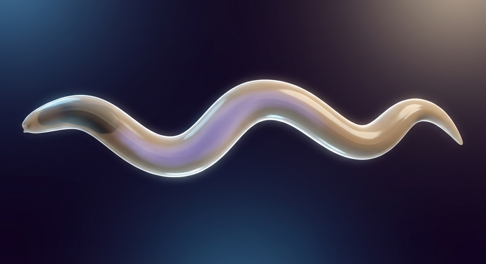
| Property | Specification |
|---|---|
| Camera | Dorsal (looking down onto worm's back), distance 800 µm |
| Visible layers | Body surface (ON), others OFF |
| Time point | Mid-crawl (body showing 1.5 sinusoidal bends) |
| Body | Smooth cuticle surface, #B09C8A with slight translucency |
| Background | #1A1A2E → #16213E gradient |
| Expected visual | A recognizable worm shape, ~1mm long, S-curved mid-crawl. Smooth surface with slight sheen. Faint internal shadows visible. Anterior (pharynx) at left, posterior at right. |
Mockup 2: Organism — Lateral View (Body Bending)¶
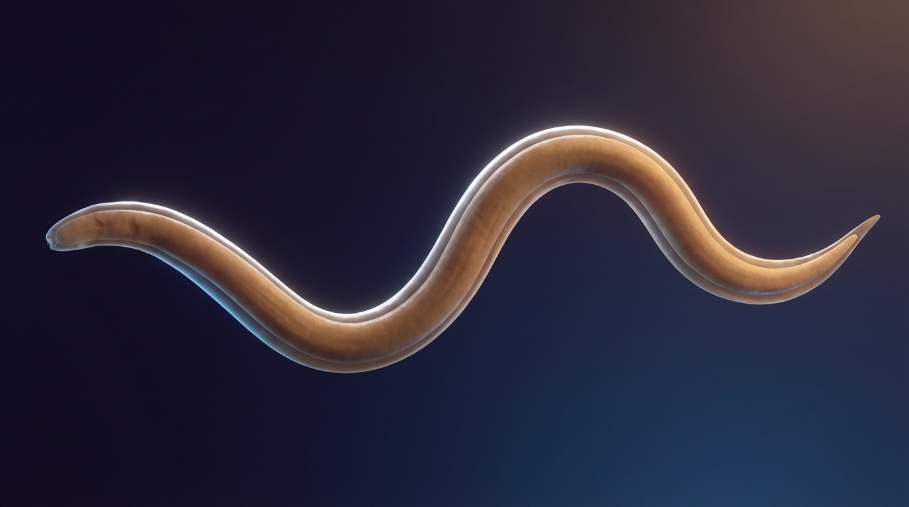
| Property | Specification |
|---|---|
| Camera | Lateral (side view), distance 800 µm, 10° above horizontal |
| Visible layers | Body surface (ON) |
| Time point | Same as Mockup 1 |
| Expected visual | Worm body seen from the side. Dorsal-ventral thickness visible (~80 µm). Sinusoidal bending in the dorsal-ventral plane. Rim light creates bright edge along dorsal surface. |
Mockup 3: Muscles Through Translucent Body¶
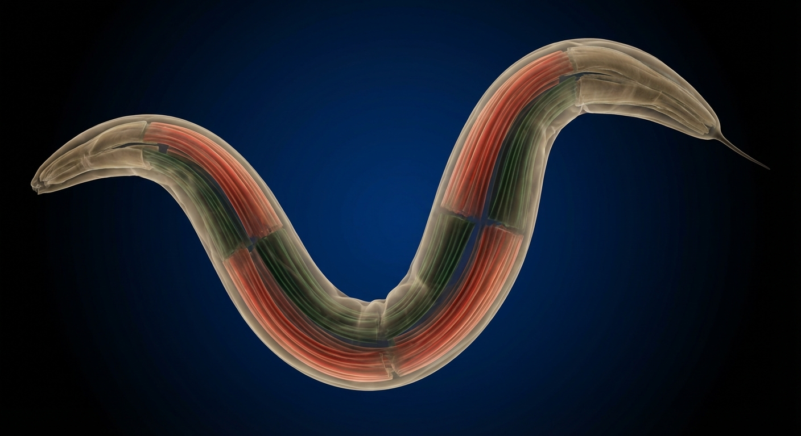
| Property | Specification |
|---|---|
| Camera | Lateral view, distance 500 µm |
| Visible layers | Body surface (ON, opacity 0.5 — reduced for this view), Muscles (ON) |
| Time point | Mid-crawl with clear dorsal-ventral alternation |
| Expected visual | Semi-transparent cuticle revealing 4 quadrants of body wall muscles. Dorsal muscles are red (contracted) where body bends dorsally; corresponding ventral muscles are green (relaxed). Pattern alternates along body length. |
Mockup 4: Neural Circuit Overview¶
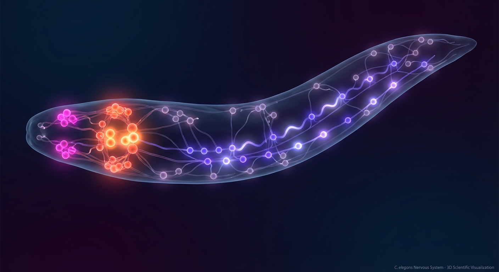
| Property | Specification |
|---|---|
| Camera | Dorsal view, distance 600 µm |
| Visible layers | Body surface (OFF), Neurons (ON) |
| Time point | Mid-activity (locomotion command active) |
| Expected visual | 302 neurons visible as colored spheres with dendrite/axon tubes. Most neurons dim (resting). Command interneurons (AVA, AVB at anterior) glowing bright orange-red. Motor neurons along ventral cord showing alternating activation pattern (purple glow propagating). Sensory neurons in head region faint magenta. Clear distinction between neuron classes by color. |
Mockup 5: Single Neuron Selected (Inspector Panel)¶
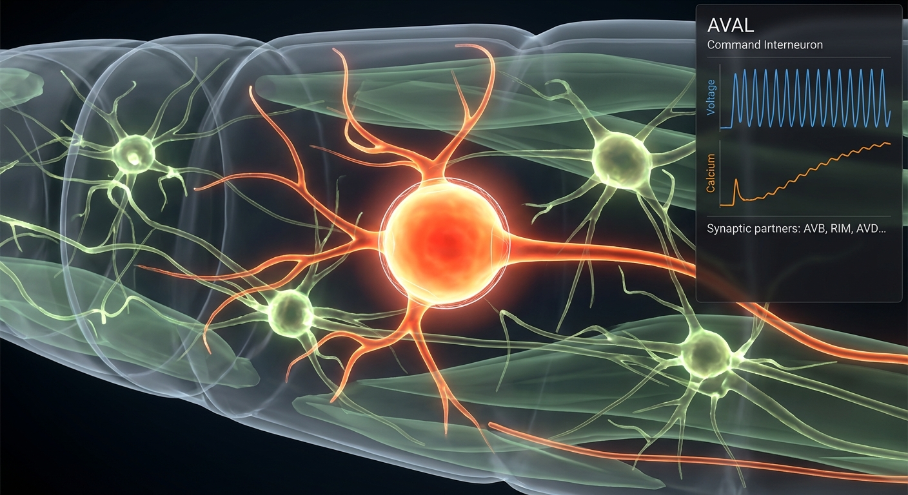
| Property | Specification |
|---|---|
| Camera | Oblique anterior view, distance 200 µm, centered on AVAL |
| Visible layers | Neurons (ON), Muscles (ON at 30% opacity) |
| Time point | AVAL at peak depolarization |
| Selected | AVAL neuron — white wireframe highlight |
| Inspector panel | Visible at right side. Shows: "AVAL", "Command Interneuron", voltage trace (line plot, 2 seconds of history), calcium trace, list of synaptic partners. |
| Expected visual | AVAL soma glowing bright orange-red with bloom halo. Surrounding neurons at various activity levels. Inspector panel with live data. |
Mockup 6: Pharynx Close-Up (Pumping)¶
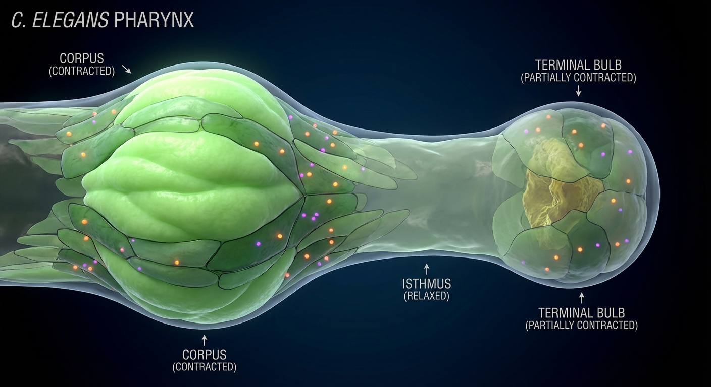
| Property | Specification |
|---|---|
| Camera | Anterior, distance 100 µm, facing into pharynx |
| Visible layers | Body surface (OFF), Pharynx (ON), Neurons (ON at 50% opacity) |
| Time point | Mid-pump (corpus contracted, isthmus relaxed, terminal bulb relaxing) |
| Expected visual | 63 pharyngeal cells visible. Corpus region opaque (contracted, green muscles bright). Isthmus translucent (relaxed). Terminal bulb semi-opaque. Pharyngeal neurons (M1-M5, MC) visible as small glowing points among the muscle cells. |
Mockup 7: Intestinal Calcium Wave (Mid-Propagation)¶
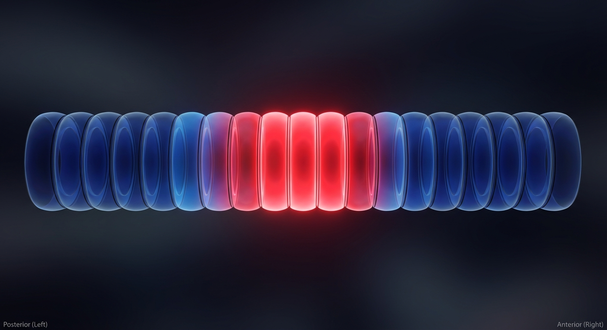
| Property | Specification |
|---|---|
| Camera | Lateral view, distance 300 µm, centered on mid-body |
| Visible layers | Body surface (OFF), Intestine (ON) |
| Time point | Calcium wave at ~40% propagation (cells 8-12 of 20 at peak) |
| Expected visual | 20 intestinal cells as tube segments. Posterior cells (1-7) returning to blue (wave has passed). Cells 8-12 bright red (peak calcium). Cells 13-20 still blue (wave hasn't arrived). Clear gradient visible at wave front. |
Mockup 8: Neuropeptide Volumetric Cloud Overlay¶
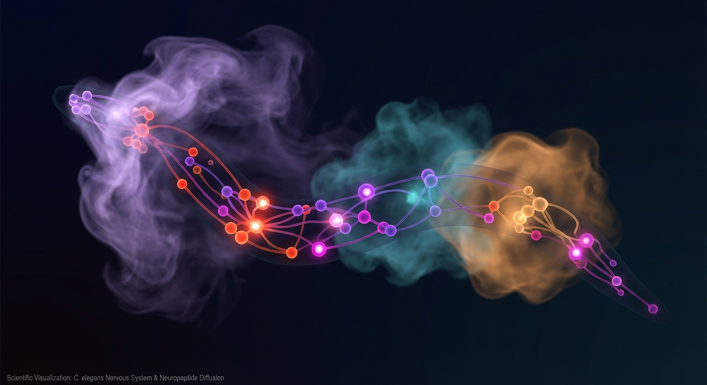
| Property | Specification |
|---|---|
| Camera | Dorsal view, distance 500 µm |
| Visible layers | Neurons (ON), Neuropeptides (ON) |
| Time point | Active neuromodulatory state (e.g., serotonergic neurons releasing peptides) |
| Expected visual | Neural circuit visible as in Mockup 4. Additionally, faint colored clouds surround releasing neurons — semi-transparent volumes that extend beyond the neuron soma, indicating diffusion range. Clouds are colored per peptide type. Multiple overlapping clouds visible with additive blending. |
Mockup 9: Cell Boundaries (DD004 Tagging)¶
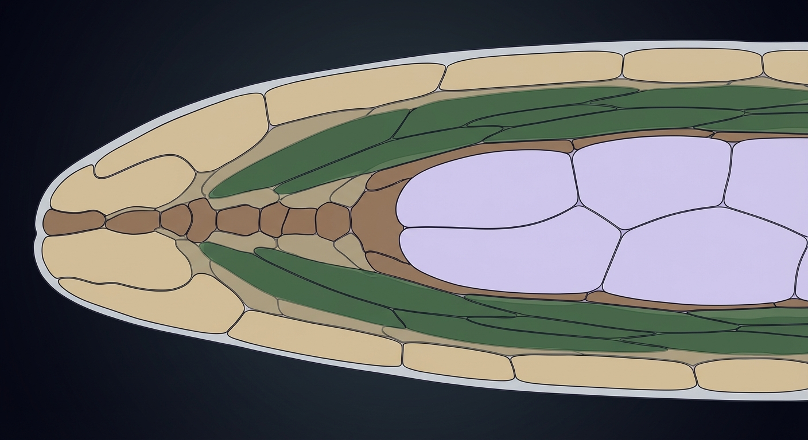
| Property | Specification |
|---|---|
| Camera | Lateral view, distance 200 µm, focused on mid-body region |
| Visible layers | Body surface (OFF), Cell boundaries (ON), Muscles (ON at 50% opacity) |
| Time point | Any (static property) |
| Expected visual | Individual cell outlines visible as thin dark lines. Each cell filled with its tissue-type color. Muscle cells green, hypodermal cells tan, seam cells brown. Cell boundaries clearly delineate individual cells — not tissue-level blobs. |
Mockup 10: Molecular — Membrane Cross-Section with Channels¶
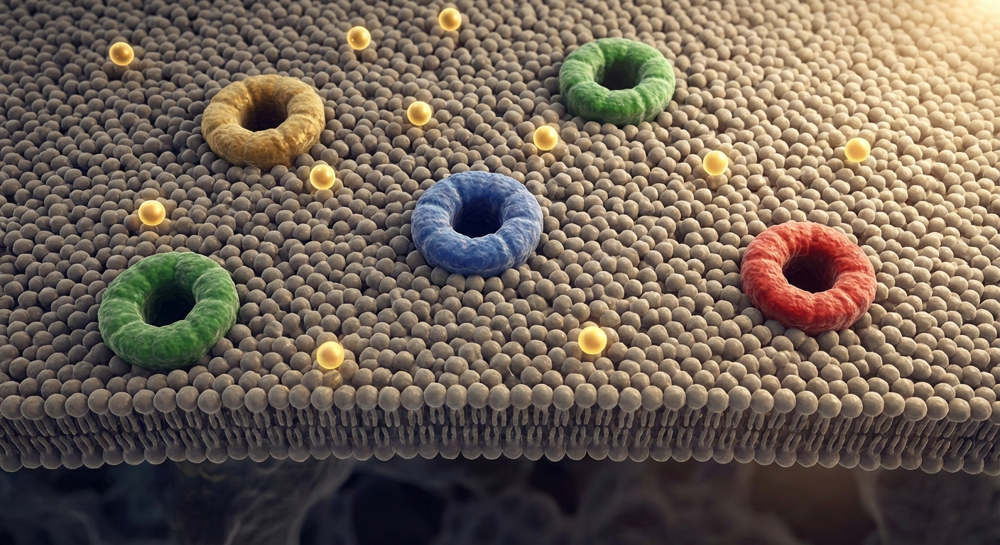
| Property | Specification |
|---|---|
| Camera | Perpendicular to membrane surface, distance 100 nm |
| Visible layers | Molecular (ON) — automatically active at this zoom |
| Time point | Resting state (channels mostly closed) |
| Expected visual | Lipid bilayer as warm gray textured surface spanning the viewport. 3-5 ion channel proteins embedded: gold (Ca²⁺), blue (Na⁺), green (K⁺) cylinders with visible closed pores. Dark cell interior below, lighter extracellular space above. A few scattered gold Ca²⁺ ions in extracellular space. |
Mockup 11: Molecular — Calcium Flowing Through Open Channel¶
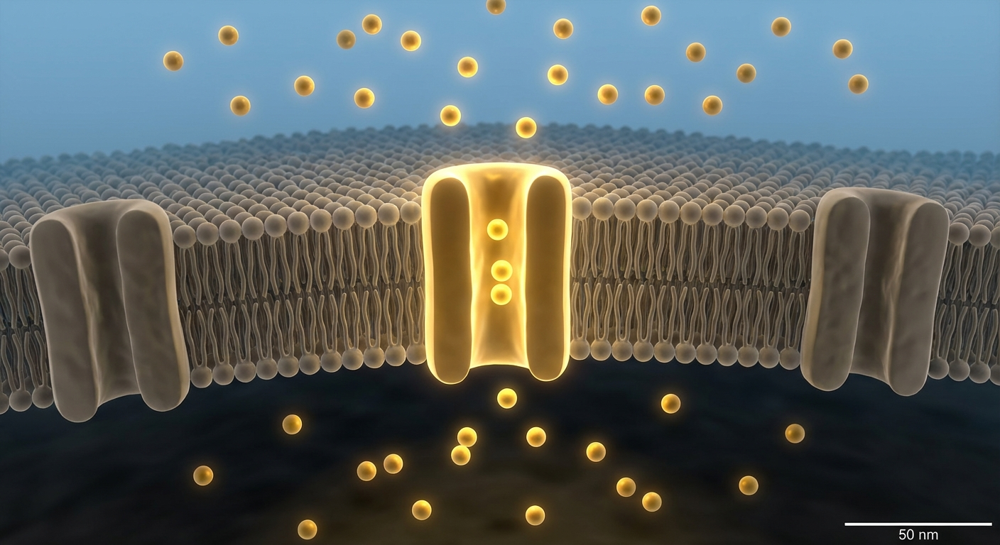
| Property | Specification |
|---|---|
| Camera | Side view of membrane, distance 50 nm, angled 30° from membrane normal |
| Visible layers | Molecular (ON) |
| Time point | Ca²⁺ channel open, active influx |
| Expected visual | One Ca²⁺ channel (gold) in center, pore visibly open (dilated). Stream of gold glowing spheres (Ca²⁺ ions) flowing through the pore from extracellular (top) to intracellular (bottom). Ions above membrane: sparse, random. Ions in channel: aligned, fast-moving. Ions below membrane: dispersing into cell interior. Channel glowing brighter than neighbors (which are closed). |
Mockup 12: Multi-Scale Transition (Organism → Tissue, Mid-Zoom)¶
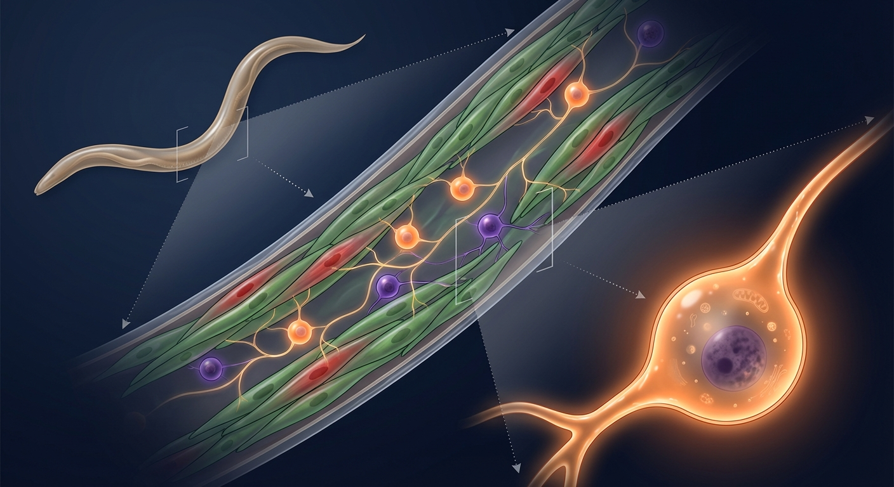
| Property | Specification |
|---|---|
| Camera | Lateral view, distance 400 µm (at transition breakpoint) |
| Visible layers | Body surface (mid-fade), Muscles (appearing), Neurons (appearing) |
| Time point | Mid-crawl |
| Expected visual | Body surface at reduced opacity (~0.4), partially wireframe. Individual muscle cells beginning to appear as green/red shapes beneath the fading cuticle. Some neurons visible as faint colored spheres. A "between-worlds" view showing both the smooth organism and the cellular interior simultaneously. |
Mockup 13: Molecular — Nucleus and Gene Transcription¶
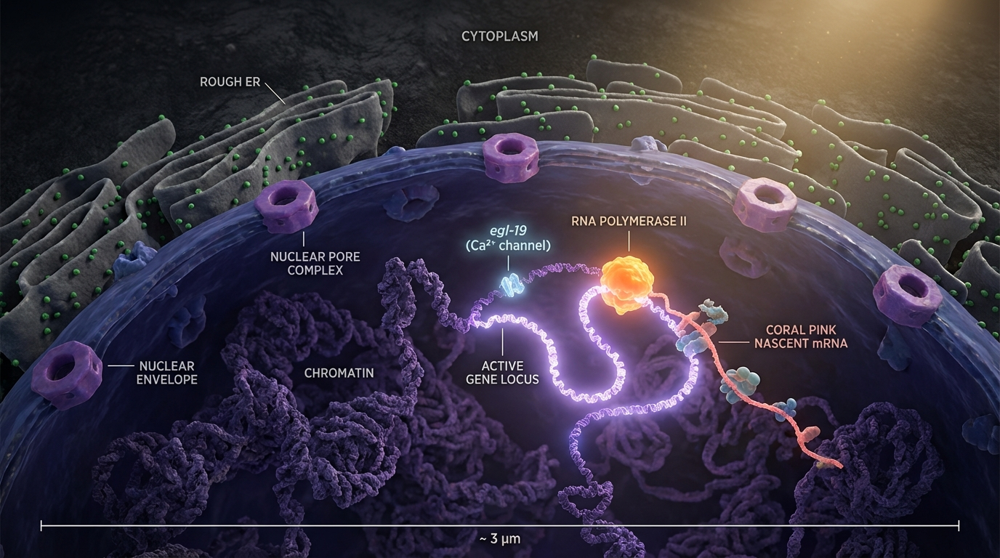
| Property | Specification |
|---|---|
| Camera | Interior view, distance 2 µm from nucleus center, looking at nuclear surface |
| Visible layers | Molecular (ON) — zoomed past membrane into cell interior |
| Time point | Active transcription of egl-19 (Ca²⁺ channel gene) |
| Expected visual | Indigo nuclear envelope fills the lower half of the frame, with 3-4 nuclear pore complexes visible as purple ring structures. Through the translucent envelope, dark chromatin masses are visible inside. One locus glows bright lavender — the active gene. A bright orange RNA Polymerase II complex sits on the unwound chromatin. A coral pink mRNA strand extends from the polymerase, growing visibly. A gene label ("egl-19 (Ca²⁺ channel)") floats near the locus. In the upper portion of the frame, rough ER membranes with green ribosome dots are faintly visible. |
Mockup 14: Molecular — mRNA Export and Channel Assembly¶
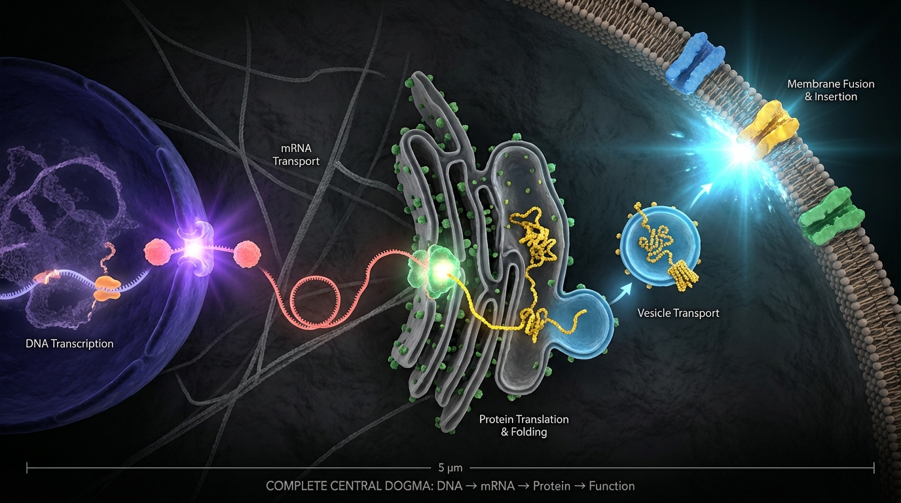
| Property | Specification |
|---|---|
| Camera | Side view showing nucleus (left), cytoplasm (center), plasma membrane (right), distance 3 µm — wide enough to see the full pipeline |
| Visible layers | Molecular (ON) |
| Time point | Multiple pipeline stages simultaneously visible |
| Expected visual | Left: Nuclear envelope with one pore glowing violet as an mRNA ball squeezes through it. Center-left: A completed coral pink mRNA coil drifting toward rough ER. Center: A ribosome on the ER glowing faintly, with a gold-yellow nascent protein strand emerging through the ER membrane — a channel protein being built. Center-right: A sky blue transport vesicle with a gold dot (Ca²⁺ channel) embedded in it, drifting toward the plasma membrane. Right: The plasma membrane with existing channels; a cyan flash where a vesicle just fused, depositing a new channel. The entire gene-to-channel pipeline is visible in a single frame — from transcription to functional membrane protein. |
7. Assigning Colors to All 959 Cells¶
The Virtual Worm palette defines 37 material categories, not 959 individual cell colors. Every cell in C. elegans maps to one of these categories based on its tissue type. The mapping uses WormBase cell ontology (WBbt) identifiers and is resolved by DD004 (Mechanical Cell Identity) and DD008 (Data Integration Pipeline).
Cell-to-Material Mapping Rules¶
| Cell Class | Count | Material Category | Base Color |
|---|---|---|---|
| Body wall muscle cells | 95 | Body_Wall_Muscle |
#295200 |
| Pharyngeal muscle cells (pm1, pm3, pm5, pm7) | ~20 | Odd#PhMuscle |
#29A300 |
| Pharyngeal muscle cells (pm2, pm4, pm6, pm8) | ~20 | Even#PhMusc |
#A3CC7A |
| Stomatointestinal muscle | 2 | Stomatoint_Muscle |
#005200 |
| Vulval muscle cells | 8 | Vulval_Muscle |
#7AA352 |
| Uterine muscle cells | 8 | Uterine_Muscle |
#7AA300 |
| Sphincter & anal depressor muscle | 3 | Sphnc_&_Anal_Dep_Musc |
#527A00 |
| Sensory neurons | ~60 | SensoryNeuron |
#CC52BE |
| Interneurons | ~80 | Interneuron |
#CC2900 |
| Motor neurons | ~120 | Motor_Neuron |
#7A52BE |
| Polymodal neurons | ~10 | PolymodalNeuron |
#C40202 |
| Neurons (unknown function) | ~32 | NeurUnkFunc |
#7A0029 |
| Hypodermal cells (hyp1-hyp11, P cells) | ~30 | Hypodermis |
#B09C8A |
| Seam cells (H, V, T lineages) | 16 | Seam_Cell |
#A35229 |
| Intestinal cells (int1-int9) | 20 | Intestine |
#CCA3CC |
| Pharyngeal epithelial cells | ~10 | Pharyngeal_Epithelium |
#7A5252 |
| Rectal epithelial cells | ~6 | Rectal_epithelium |
#7A5252 |
| Vulval epithelial cells | ~22 | Vulva_epithelium |
#7A7ACC |
| Arcade cells | ~6 | Arcade_Cells |
#A3A300 |
| Socket cells | ~20 | SocketCell |
#CC7A7A |
| Sheath cells | ~10 | SheathOther |
#297A7A |
| GLR cells | 6 | GLR_Cells |
#BE7A00 |
| Marginal cells (mc1-mc3) | ~9 | marginal_cells |
#BE29BE |
| Head mesodermal cell | 1 | Head_Mesodermal_Cell |
#CC5229 |
| Coelomocytes | 6 | Coelomocyte |
#CCA300 |
| Excretory cell | 1 | Excretory_Cell |
#A32952 |
| Excretory pore cell | 1 | Excretory_Pore_Cell |
#BDC672 |
| Excretory duct cell | 1 | Excretory_Duct_Cell |
#A37A52 |
| Excretory gland cells | 2 | Excretory_Gland_Cells |
#7A7AA3 |
| Germline (syncytial) | ~1000* | Germline |
#002952 |
| DTC & somatic gonad | ~12 | DTC_&_Somatic_Gonad |
#7A52CC |
| Spermatheca | ~24 | Spermatheca |
#297ACC |
| Spermathecal-uterine valve | ~4 | Spermath_Uterin_Valve |
#52527A |
| Uterus (non-muscle) | ~12 | Uterus |
#7AA3A3 |
| Pharyngeal & rectal glands | ~9 | Phary_&_Rect_Glands |
#A3A3CC |
| VPI & VIR cells | ~6 | VPI_&_VIR |
#7A5229 |
*Germline contains ~1000 germ cells but is treated as a syncytial tissue for visualization purposes.
Cells not in the above table: Any cell not explicitly listed is assigned to the closest tissue-type material based on its WBbt lineage. The DD004/DD008 integration pipeline resolves this mapping. If a cell has no WBbt annotation, it defaults to Hypodermis (#B09C8A) — the most common non-specific tissue.
8. Alternatives Considered¶
1. Flat / Cartoon Rendering Style (Cell Shading)¶
Rejected. Cel-shaded or flat-color rendering produces clean, illustrative visuals but does not convey biological depth. Translucency, subsurface scattering, and volumetric effects are essential for communicating that this is a living organism, not a diagram. Flat rendering also eliminates the lighting cues needed for 3D perception.
2. Photorealistic Rendering (Path Tracing)¶
Rejected. Path-traced rendering produces beautiful results but is computationally prohibitive for real-time playback at 60fps, even with WebGPU. It also risks the uncanny valley — a "almost real" worm that looks slightly wrong is worse than a clearly stylized rendering that communicates the right information. PBR with bloom and OIT achieves a "scientifically evocative" look without the performance cost.
3. False-Color Only (No Surface Rendering)¶
Rejected. Displaying only colormapped data (like a heatmap overlaid on wireframe) communicates quantitative information but not anatomy. A non-scientist cannot identify structures or understand spatial relationships. The smooth-surface organism scale is essential for the "a person can see it's a worm" criterion.
4. Per-Cell Unique Colors (959 Distinct Hues)¶
Rejected. Assigning a unique color to each of the 959 cells would make the tissue-type grouping invisible. The human visual system cannot distinguish 959 colors. The 37-material-category approach groups cells by tissue type, which is biologically meaningful and visually parseable.
5. Dynamic Color Palette Based on Data Range¶
Considered for future. An auto-scaling palette that adjusts color ranges based on actual simulation data min/max could improve contrast. However, it makes visual comparison across simulations inconsistent. The fixed scales in Section 1B (e.g., -80mV to +20mV for voltage) match physiological ranges and produce consistent visuals regardless of simulation output.
9. Quality Criteria¶
-
Every cell type has a color. All 37 Virtual Worm material categories are implemented. Any cell visible in the viewer is colored according to its tissue-type mapping (Section 7).
-
Worm recognition. A non-scientist shown the organism-scale view (Mockup 1) can identify "that's a worm" without prompting.
-
Activity discrimination. Active vs. resting neurons are visually distinguishable at 1080p resolution. An observer can point to the "glowing" neuron in a field of 302.
-
Muscle state visible. Contracted (red) vs. relaxed (green) muscles are distinguishable in the tissue-scale view (Mockup 3). The locomotion wave pattern is visible as alternating color bands.
-
Molecular communication — membrane. The molecular-scale membrane view (Mockup 10) communicates "this is a cell membrane with channels" to a biology undergraduate. Ion channels, lipid bilayer, and flowing ions are identifiable.
-
Molecular communication — gene expression. The molecular-scale intracellular view (Mockups 13-14) communicates the central dogma: a user can watch a gene being transcribed in the nucleus, see the mRNA travel to the ER, watch a ribosome build a channel protein, and see the finished channel arrive at the membrane. The full pipeline is visually traceable in a single session.
-
Scale transitions are smooth. The organism→tissue transition (Mockup 12) does not produce visual artifacts, sudden pops, or disorienting jumps. A user can smoothly zoom from organism to molecular scale.
-
CeNGEN-driven expression. The gene expression pipeline at molecular scale reflects the selected cell's actual expression profile from DD005 CeNGEN data — a motor neuron produces different channel types than a sensory neuron.
-
Reference mockup match. All 14 mockups have corresponding implementation screenshots that match the specifications. Deviations are documented and justified.
-
Performance. Rendering meets the targets in Section 5F (60fps target, 15fps minimum on integrated GPU) at all three scales.
10. Boundaries¶
This document does NOT specify:
- Data formats or schemas — See DD014 (OME-Zarr structure,
.zattrsmetadata) - Viewer UI layout or interaction design — See DD014 (layout mockup, layer toggle system, inspector panel)
- Docker deployment or CI/CD — See DD014 + DD013
- Simulation algorithms — See DD001-DD009
- Validation criteria — See DD010
- Web framework choice (Trame vs Three.js) — See DD014
DD014.1 specifies purely: what things look like, what color they are, how they glow, how they transition between scales, and what the rendering algorithms are.
Context & Background¶
Scientific visualization requires consistent, meaningful color coding to communicate biological data accurately. Medical and scientific illustration conventions (e.g., Netter atlas color traditions, electrophysiology colormaps) inform palette choices throughout this specification.
The Virtual Worm project (2012) established the only canonical color palette for C. elegans anatomy, defining 37 material categories in a Blender model. This specification preserves those heritage colors as the foundation and extends them with activity-state overlays and molecular-scale assignments. Ensuring visual consistency across all OpenWorm renderings, publications, and documentation screenshots is essential for project identity and scientific communication.
The rendering techniques specified here (PBR materials, bloom, OIT, volumetric ray marching) represent a balance between visual quality and real-time performance. They were selected to run at 60fps on commodity hardware while communicating biological structure at three distinct spatial scales.
References¶
- Virtual Worm Blender Model (February 2012):
Virtual_Worm_February_2012.blend— Source of 37 canonical material categories. MTL file:Virtual_Worm_February_2012.mtl. - DD014: Dynamic Visualization Architecture: Companion document specifying data pipeline, Zarr schema, viewer framework, and Docker integration.
- McGuire & Bavoil (2013): "Weighted Blended Order-Independent Transparency" — Algorithm for OIT compositing (Section 5A).
- Three.js MeshStandardMaterial: https://threejs.org/docs/#api/en/materials/MeshStandardMaterial — PBR material model reference.
- CeNGEN (2020-2024): C. elegans Neuronal Gene Expression Map — Source for cell-type-specific channel densities referenced in molecular scale.
- WormBase cell ontology (WBbt): https://wormbase.org — Canonical cell identity assignments used for cell-to-material mapping.
- WormAtlas: https://wormatlas.org — Anatomical reference for tissue structure and cell positions.
Integration Contract¶
Inputs / Outputs¶
| Direction | Source/Consumer | Data | Format |
|---|---|---|---|
| Input | DD014 | Simulation state data | OME-Zarr |
| Output | Viewer | Rendered frames | WebGL/PNG |
Configuration¶
- Color palette: defined as JSON/YAML theme file consumed by DD014 viewer
- Rendering parameters: ambient occlusion radius, SSS depth, bloom threshold
Coupling Dependencies¶
- Upstream: DD014 (viewer architecture), DD005 (cell type list determines color assignments)
- Downstream: All visualization outputs, publications, documentation screenshots
- Approved by: Pending
- Implementation Status: Proposed
-
Next Actions:
-
Validate hex values against Virtual Worm Blender model (re-export MTL and cross-check)
- Create reference mockup images (Blender renders or concept art) for the 14 canonical views
- Implement heritage palette in Worm3DViewer (Phase 1) — replace current ad-hoc colors with Section 1A
- Implement voltage-to-visual mapping (Section 1B) in the neuron rendering pipeline
- Review with community: do the molecular-scale visual choices (Section 3C) communicate biology effectively?
- Map DD005 CeNGEN expression data to per-cell-type gene expression visualization parameters (which genes are visually transcribed, at what rate)
- Design data pipeline for gene expression events (transcription → export → translation → trafficking) — may require new Zarr group in DD014 schema